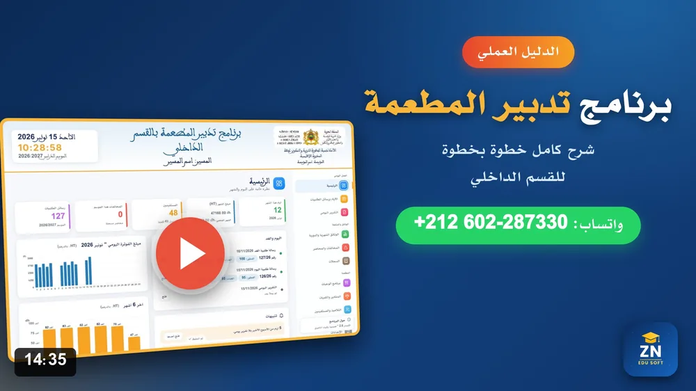
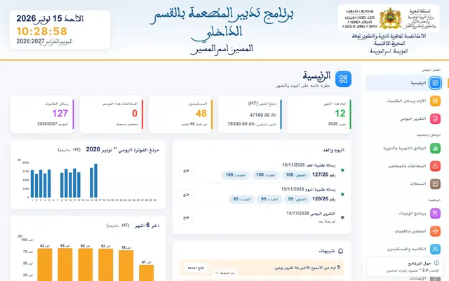
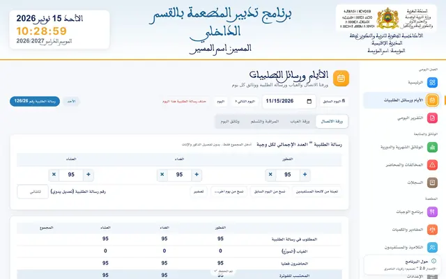
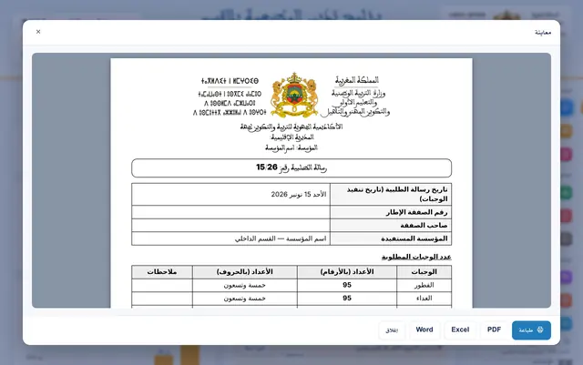
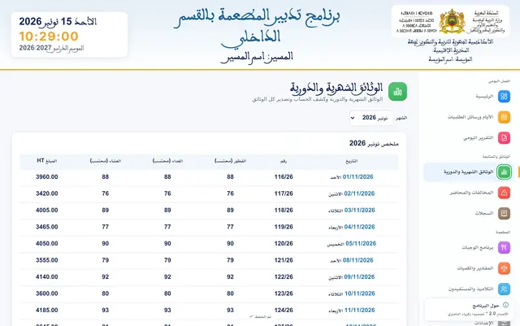
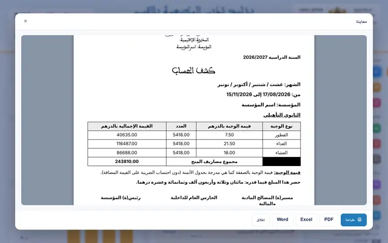
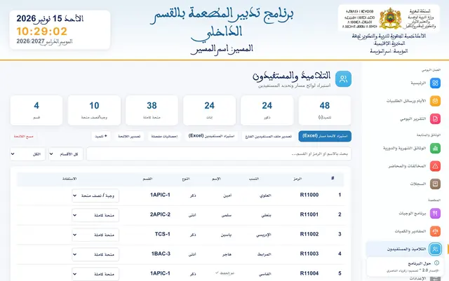
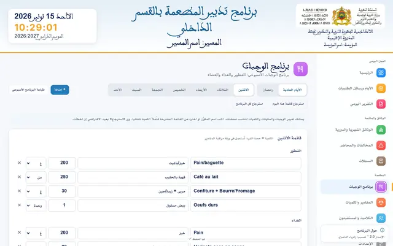
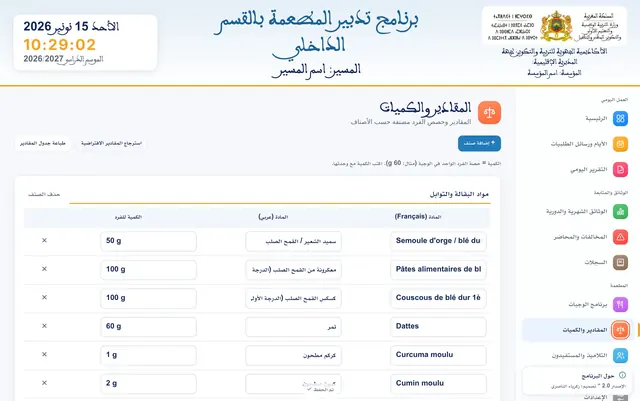

ما فكرة البرنامج؟
تُدخل أعداد الوجبات فقط (الفطور والغداء والعشاء، وفي رمضان الفطور والعشاء الخاصان)، وينجز البرنامج تلقائيا كل الوثائق اليومية والشهرية والدورية. وهو موجَّه إلى مسيّري المصالح المادية والمالية (الاقتصاد) بالمؤسسات التعليمية بالمغرب التي لها قسم داخلي ومطعمة مدرسية بالتدبير المفوَّض.
من وثائقه: رسالة الطلبية، ورقة الاتصال، ورقة الغياب، محضر الاستلام اليومي، التقرير اليومي بتتبع نظام المطعمة، بيان الاستهلاك اليومي، المحضر الشهري للاستلام، شهادة الاستلام الفصلية ARS، كشف الحساب الدوري، المواد المستهلكة، برنامج الوجبات الأسبوعي، الكميات والمقادير، ومحاضر المخالفات والإلغاء والإتلاف والمعاينة.
الفيديو التعريفي
دليل عملي مدته 14 دقيقة و35 ثانية يشرح البرنامج خطوة بخطوة. اضغط على الصورة لمشاهدته على صفحتنا في فيسبوك.

شاهد الفيديو التعريفي على فيسبوكمزايا البرنامج
مجموع كل وجبة دون تفصيل ذكور وإناث، والبرنامج ينجز الباقي.
حسب رسالة الطلبية (والاعتماد على الحضور الفعلي اختياري من الإعدادات).
ترقيم «الرقم/السنة»، والأثمنة دون احتساب الضريبة، وضريبة 10% على القيمة المضافة، والعملة «dh».
حسب كل وثيقة، بترويسة رسمية: شعار الوزارة ثم الأكاديمية والمديرية والمؤسسة.
طباعة مباشرة أو تصدير بصيغ PDF وWord وExcel، دون حاجة إلى برنامج آخر.
وثائق يوم واحد، أو شهر، أو فترة مختارة، أو إجمالي الوثائق دفعة واحدة.
لمدة من شهر إلى أربعة أشهر حسب الاختيار.
لتحديد التلاميذ المستفيدين بسهولة.
برنامج الوجبات الأسبوعي والمقادير والكميات (الغرامات) لكل وجبة، قابلة للتعديل.
تسجيل المخالفات وتحرير محاضرها، وقائمة أنواعها قابلة للتعديل، ومحاضر الإلغاء والإتلاف والمعاينة.
نسخ واستعادة للمعطيات، وقفل اختياري بالرمز السري.
يُثبَّت الإصدار الجديد فوق القديم، فتبقى المعطيات والتفعيل كما هي.
لقطات من البرنامج
اضغط على أي لقطة لتكبيرها.


الشاشة الرئيسية

الأيام ورسائل الطلبيات

معاينة رسالة الطلبية قبل الطباعة

الوثائق الشهرية والدورية

كشف الحساب الدوري

التلاميذ والمستفيدون

برنامج الوجبات

المقادير والكمياتاللقطات بأسماء ومعطيات تجريبية.
نماذج من الوثائق التي ينجزها البرنامج
نماذج مصوَّرة بأسماء ومعطيات تجريبية، واسم المؤسسة فيها «اسم المؤسسة».


تحميل البرنامج وتنصيبه وتفعيله
التحميل مجاني للتجربة، والاستعمال الكامل يلزمه رمز التفعيل.
- حمّل البرنامج. اضغط «تحميل البرنامج» لتنزيل ملف مضغوط (
ZIP)، وهو أسلم من ملف.exeلأن المتصفح وبرامج الحماية قد تحجب الملفات التنفيذية. - فُكَّ الضغط. انقر على الملف بالزر الأيمن ثم «استخراج الكل».
- نصّب البرنامج. شغّل ملف التنصيب
Gestion-Cantine-Internat-Setup.exeواتبع المعالج. إن ظهر تنبيه من Windows فاختر More info ثم Run anyway. وبعد التنصيب تجد اختصار البرنامج بالعربية على سطح المكتب. - افتح البرنامج. ستظهر شاشة التفعيل برقم الجهاز، وفيها زر «طلب التفعيل» عبر واتساب.
- اطلب التفعيل. اضغط «طلب التفعيل» (أو انسخ رقم الجهاز وأرسله إلى الرقم أدناه)، فتتوصل برمز التفعيل المرتبط بحاسوبك.
- أدخل رمز التفعيل. ألصقه في الخانة المخصصة واضغط تفعيل، ثم ابدأ العمل.
للتحديث لاحقا: نصّب الإصدار الجديد فوق القديم، فتبقى معطياتك والتفعيل كما هي. وللاستفسار عن الثمن تواصل معنا عبر واتساب.
متطلبات التشغيل
| نظام التشغيل | Windows 10 أو 11 (يُفضَّل) |
|---|---|
| الإنترنت | غير لازم بعد التثبيت |
| مساحة القرص | مساحة قليلة |
| برامج أخرى | لا يتطلب Excel ولا غيره، والتصدير إلى Word وExcel وPDF مدمج فيه |
أسئلة شائعة
هل يعمل دون إنترنت؟
نعم، كل شيء يعمل محليا في حاسوبك.
هل معطياتي آمنة؟
تبقى في حاسوبك، وفيه نسخ احتياطي واستعادة وقفل اختياري بالرمز السري.
هل يناسب مؤسستي إن كانت صفقتها مختلفة؟
نعم: الوجبات والمقادير وأنواع المخالفات والأثمنة قابلة للتعديل.
هل أفقد معطياتي عند التحديث؟
لا، يُثبَّت الإصدار الجديد فوق القديم فتبقى المعطيات والتفعيل.
بأي صيغ أصدّر الوثائق؟
طباعة مباشرة أو PDF أو Word أو Excel.